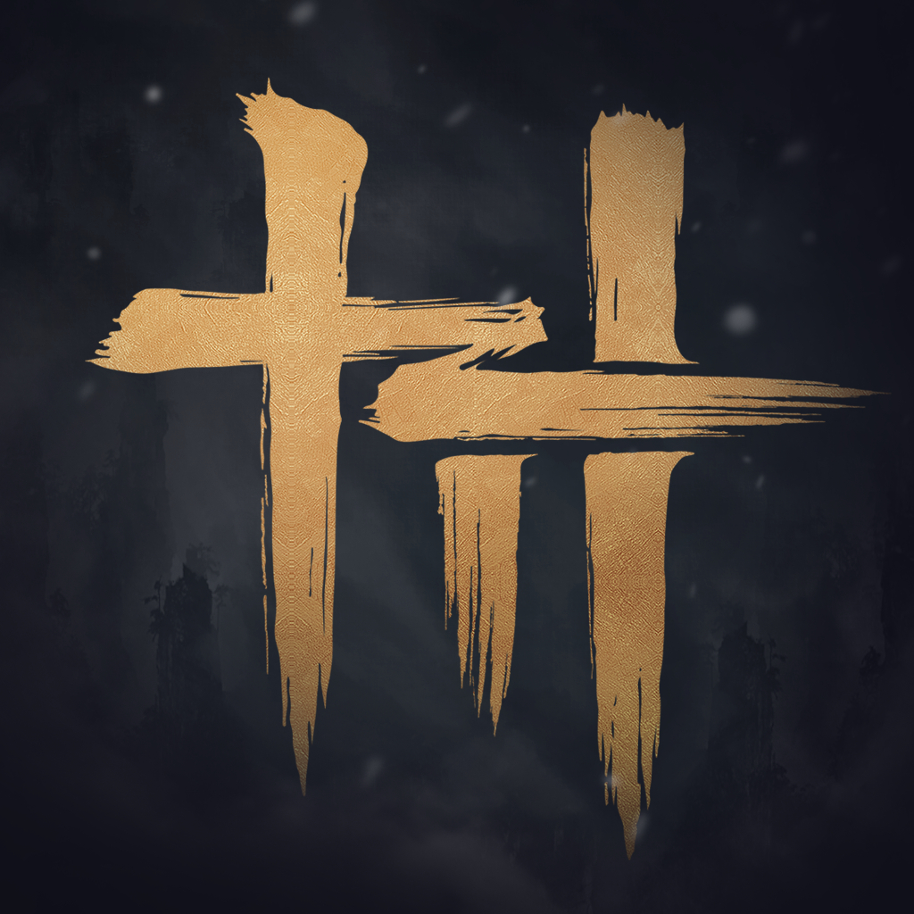

B站直播日报汇总
2026-11-25 · 官方 1/15 开播 · KOL 11/13 开播
12/28
开播间
84h40m
累计时长
135,245
有效弹幕（原始 194,905，剔除 59,660）
📊 当日全场舆情（12 间开播 · 三维打点）
风险等级：低（1.0%） 判定 v3.2-m5.0
有效弹幕 135,245（剔噪声 0） ｜
正向率 15.2% ｜ 负向率 17.0% ｜
判定来源：consensus 130424（96%）多源 4821（4%）
① 话题分布
游戏 24819（18%） ｜ 泛讨论 110426（82%）
正面中性负面
游戏话题game18%
正 4989·中 13195·负 663524,819 条
泛讨论话题meta82%
正 15541·中 78488·负 16397110,426 条
游戏话题 · 明细
角色22%5,331
商业化20%5,060
玩法16%3,936
剧情15%3,643
竞品对比10%2,457
音乐音效9%2,226
版本节奏6%1,579
技术2%587
展开其余 5 个话题收起▾
泛讨论话题 · 明细
泛讨论96%106,084
社区生态2%1,617
厂商动态1%1,398
主播KOL1%1,327
展开其余 1 个话题收起▾
② 情感分布
正面为主 1（0%）偏正面 20529（15%）中性 91683（68%）偏负面 22794（17%）负面为主 238（0%）
③ 风险标签
高 706 ｜ 中 617 ｜ 低 26 ｜ 无 133896
泄露/开盒 611社区互撕/引战 475产品事故 110涉政敏感 94性别对立 41阶级/地域对立 26
代表性评论
- [泛讨论]“你不是睡了吗”
- [角色]“'想老婆了”
- [商业化]“强颜欢笑”
- [玩法]“肝不要了”
- [剧情]“爽窥是谁翻译的[大笑][大笑][大笑][大笑]”
⚠️ 风险弹幕样本（共 1323 条，展示前 6）
- · [泄露/开盒] 有大佬在破解了
- · [泄露/开盒] 棉花这么晚播是因为怕说泄露秘密吗[捂脸]
- · [社区互撕/引战] 警哥红温了
- · [社区互撕/引战] 还好主角中间缓冲了一下
- · [产品事故] 道歉！！
- · [产品事故] 给无辜的路人道歉！
口径：三维正交打点（话题/情感/风险互不耦合）。有效弹幕 = 剔除抽奖刷屏/纯社交噪声后的弹幕。
风险率 = risk_level∈(中,高) 弹幕数 ÷ 有效弹幕数。分歧/反讽/风险候选 4821 条；真实LLM覆盖 0 条，规则兜底复核 1909 条。
游戏直播热度看板
快照时间：2026-11-25（历史补跑） ｜ 全天开播量=24h去重累计 ｜ 官方关注数/Top3/头部主播=今日实时 ｜ 开播趋势=开播量日环比 ｜ 数据来源：B站直播分区API
今日争议 TOP3（按游戏 / 按直播间）
口径：按话题（topic）聚合争议，看情感分歧与风险条数；兜底话题「综合讨论」不单独成争议。
按游戏聚合
TOP1
鸣潮 · 泛讨论
围绕【泛讨论】出现明显分歧（14514条，正3385/负2313，含 56 条风险弹幕）。
51372
TOP2
原神 · 泛讨论
围绕【泛讨论】出现明显分歧（9464条，正925/负1401，含 10 条风险弹幕）。
28245
TOP3
明日方舟 · 泛讨论
围绕【泛讨论】出现明显分歧（23999条，正3141/负2996，含 2 条风险弹幕）。
23999
按直播间聚合
TOP1
魔法Zc目录 · 泛讨论
围绕【泛讨论】出现明显分歧（23999条，正3141/负2996，含 2 条风险弹幕）。
23999
TOP2
热爱游戏张大狗 · 泛讨论
围绕【泛讨论】出现明显分歧（14514条，正3385/负2313，含 56 条风险弹幕）。
14514
TOP3
乃琳Queen · 泛讨论
围绕【泛讨论】出现明显分歧（14500条，正1958/负2025，含 5 条风险弹幕）。
14500
官方直播间
开播 1/15 ｜ 弹幕 1 条 ｜ 时长 0h42m
网易第五人格手游（5887574）👥 4,881,961 关注
📡 开播 🔥 冷清 20 🛡️ 风险 低（0.0%）🎮 主内容：第五人格
🏷️ Top话题：直播互动
💬 弹幕信号：
中性 1100%
📊 舆情三维（话题 / 情感 / 风险）
有效 1
🟢低 0.0%
话题分布
正面中性负面
游戏话题game0%
正 0·中 0·负 00 条
泛讨论话题meta100%
正 0·中 1·负 01 条
泛讨论话题 · 明细
泛讨论100%1
争议总结：今日暂无可判定争议主题。
原神（21987615）
👥 20,971,815 关注未开播
崩坏：星穹铁道（27263119）
👥 12,561,441 关注未开播
绝区零（32805602）
👥 8,155,291 关注未开播
明日方舟（5555734）
👥 7,657,489 关注未开播
鸣潮（27354807）
👥 5,410,959 关注未开播
明日方舟终末地（1921300321）
👥 4,924,979 关注未开播
异环（1890951177）
👥 3,037,129 关注未开播
暗区突围（24807588）
👥 2,674,070 关注未开播

待核房间_26284671（26284671）
👥 1,188,449 关注未开播
望月（1892451545）
👥 739,065 关注未开播
遗忘之海（1974514268）
👥 572,307 关注未开播
伊莫（1746235011）
👥 433,420 关注未开播
归环（1992270167）
👥 301,202 关注未开播
待核房间_1942243734（1942243734）
👥 51,837 关注未开播
KOL 直播间
开播 11/13 ｜ 弹幕 135,244 条 ｜ 时长 83h57m
你的影月月（21414905）👥 10,721,267 关注
📡 开播 🔥 热门 75 🛡️ 风险 低（0.2%）🏷️ KOL标签：商单频率：中 ｜ 方向：原神 / 星铁 / 绝区零 / 攻略评测
🎮 主内容：终末地
🏷️ Top话题：终末地(133) / 角色(65) / 剧情(64)
💬 弹幕信号：
偏正面 85511%中性 524871%偏负面 133518%
📊 舆情三维（话题 / 情感 / 风险）
有效 7438
🟢低 0.2%
话题分布
正面中性负面
游戏话题game18%
正 239·中 771·负 3131,323 条
泛讨论话题meta82%
正 616·中 4477·负 10226,115 条
游戏话题 · 明细
商业化21%277
角色18%232
版本节奏17%226
玩法15%193
剧情13%167
音乐音效8%108
竞品对比6%83
技术3%37
展开其余 5 个话题收起▾
泛讨论话题 · 明细
泛讨论97%5,946
主播KOL2%104
厂商动态1%46
社区生态0%19
展开其余 1 个话题收起▾
代表性评论
- [泛讨论] “妈开播了[dog]”
- [商业化] “付费测试带返利”
- [角色] “估计明年年初也就出了”
争议焦点：TOP1 泛讨论 5946TOP2 商业化 277TOP3 版本节奏 226
围绕【泛讨论】出现明显分歧（5946条，正595/负993，含 4 条风险弹幕）。
魔法Zc目录（3044248）👥 3,476,757 关注
📡 开播 🔥 火爆 89 🛡️ 风险 低（0.4%）🏷️ KOL标签：商单频率：中 ｜ 方向：明日方舟 / 终末地 / 星铁 / 直播反应
🎮 主内容：抽卡
🏷️ Top话题：抽卡(61) / 终末地(36) / 剧情(30)
💬 弹幕信号：
正面为主 10%偏正面 395214%中性 2024772%偏负面 374513%负面为主 400%
📊 舆情三维（话题 / 情感 / 风险）
有效 27985
🟢低 0.4%
话题分布
正面中性负面
游戏话题game13%
正 767·中 2102·负 6743,543 条
泛讨论话题meta87%
正 3186·中 18145·负 311124,442 条
游戏话题 · 明细
玩法38%1,344
角色26%903
商业化13%466
竞品对比8%287
剧情8%271
音乐音效3%120
版本节奏2%85
技术2%67
展开其余 5 个话题收起▾
泛讨论话题 · 明细
泛讨论98%23,999
主播KOL1%267
厂商动态0%106
社区生态0%70
展开其余 1 个话题收起▾
代表性评论
- [泛讨论] “zskbl”
- [玩法] “本直播间不参与讨论任何节奏话题，还请理解~”
- [角色] “请大家不要表情包刷屏，推荐点赞完成任务，感谢配合~”
争议焦点：TOP1 泛讨论 23999TOP2 玩法 1344TOP3 角色 903
围绕【泛讨论】出现明显分歧（23999条，正3141/负2996，含 2 条风险弹幕）。
卡特亚（1455691）👥 3,456,256 关注
📡 开播 🔥 热门 72 🛡️ 风险 低（1.2%）🏷️ KOL标签：商单频率：中 ｜ 方向：原神 / 星铁 / 绝区零 / 鸣潮 / 直播反应
🎮 主内容：角色
🏷️ Top话题：角色(69) / 抽卡(44) / 崩铁(33)
💬 弹幕信号：
偏正面 43614%中性 232872%偏负面 45514%负面为主 90%
📊 舆情三维（话题 / 情感 / 风险）
有效 3228
🟢低 1.2%
话题分布
正面中性负面
游戏话题game23%
正 168·中 418·负 161747 条
泛讨论话题meta77%
正 268·中 1910·负 3032,481 条
游戏话题 · 明细
商业化34%251
角色26%198
玩法15%113
剧情8%58
版本节奏7%53
音乐音效4%30
竞品对比3%23
技术3%21
展开其余 5 个话题收起▾
泛讨论话题 · 明细
泛讨论98%2,423
主播KOL2%39
厂商动态1%15
社区生态0%4
展开其余 1 个话题收起▾
代表性评论
- [泛讨论] “开了开了[dog]”
- [商业化] “细嗦补偿”
- [角色] “看起来像精灵版的游戏王决斗链接，主角人设很像武藤游戏[藏狐]”
争议焦点：TOP1 泛讨论 2423TOP2 商业化 251TOP3 角色 198
围绕【泛讨论】出现明显分歧（2423条，正266/负286，含 34 条风险弹幕）。
企鹅带带北极熊（23121424）👥 3,283,697 关注
📡 开播 🔥 热门 67 🛡️ 风险 低（0.4%）🏷️ KOL标签：商单频率：中 ｜ 方向：原神 / 星铁 / 绝区零 / 付费内容 / 抽卡
🎮 主内容：终末地
🏷️ Top话题：终末地(12) / 剧情(7) / 抽卡(4)
💬 弹幕信号：
偏正面 21512%中性 127274%偏负面 23213%负面为主 40%
📊 舆情三维（话题 / 情感 / 风险）
有效 1723
🟢低 0.4%
话题分布
正面中性负面
游戏话题game13%
正 35·中 127·负 55217 条
泛讨论话题meta87%
正 180·中 1145·负 1811,506 条
游戏话题 · 明细
角色25%55
玩法24%53
剧情18%39
商业化15%33
音乐音效10%22
版本节奏5%11
技术1%2
竞品对比1%2
展开其余 5 个话题收起▾
泛讨论话题 · 明细
泛讨论99%1,487
主播KOL0%8
厂商动态0%8
社区生态0%3
展开其余 1 个话题收起▾
代表性评论
- [泛讨论] “终于开播啦”
- [角色] “一发十连就出了”
- [玩法] “终于上当了”
争议焦点：TOP1 泛讨论 1487TOP2 角色 55TOP3 玩法 53
围绕【泛讨论】出现明显分歧（1487条，正179/负176）。
棉花大哥哥（103）👥 2,722,554 关注
📡 开播 🔥 火爆 80 🛡️ 风险 低（0.2%）🏷️ KOL标签：商单频率：高 ｜ 方向：泛二游直播 / 米哈游系 / 鸣潮 / 终末地 / 社区节奏
🎮 主内容：剧情
🏷️ Top话题：剧情(234) / 终末地(76) / 支线(57)
💬 弹幕信号：
偏正面 133111%中性 839970%偏负面 218718%负面为主 180%
📊 舆情三维（话题 / 情感 / 风险）
有效 11935
🟢低 0.2%
话题分布
正面中性负面
游戏话题game18%
正 373·中 1057·负 7482,178 条
泛讨论话题meta82%
正 958·中 7342·负 14579,757 条
游戏话题 · 明细
商业化26%567
剧情24%514
角色20%425
玩法11%249
竞品对比7%146
音乐音效5%113
版本节奏5%111
技术2%53
展开其余 5 个话题收起▾
泛讨论话题 · 明细
泛讨论97%9,464
主播KOL2%191
厂商动态1%69
社区生态0%33
展开其余 1 个话题收起▾
代表性评论
- [泛讨论] “你不是睡了吗”
- [商业化] “强颜欢笑”
- [剧情] “爽窥是谁翻译的[大笑][大笑][大笑][大笑]”
争议焦点：TOP1 泛讨论 9464TOP2 剧情 514TOP3 商业化 567
围绕【泛讨论】出现明显分歧（9464条，正925/负1401，含 10 条风险弹幕）。
神奇陆夫人（115）👥 1,751,139 关注
📡 开播 🔥 火爆 81 🛡️ 风险 低（0.6%）🎮 主内容：剧情
🏷️ Top话题：剧情(125) / 角色(102) / 崩铁(53)
💬 弹幕信号：
偏正面 175016%中性 761869%偏负面 173916%负面为主 130%
📊 舆情三维（话题 / 情感 / 风险）
有效 11120
🟢低 0.6%
话题分布
正面中性负面
游戏话题game18%
正 471·中 1035·负 4931,999 条
泛讨论话题meta82%
正 1279·中 6583·负 12599,121 条
游戏话题 · 明细
商业化30%589
角色23%464
玩法16%326
剧情16%323
版本节奏4%83
竞品对比4%76
技术4%69
音乐音效4%69
展开其余 5 个话题收起▾
泛讨论话题 · 明细
泛讨论98%8,925
厂商动态1%85
主播KOL1%58
社区生态1%53
展开其余 1 个话题收起▾
代表性评论
- [泛讨论] “中午好，夫人”
- [商业化] “在崩三专武是拿板砖，所以板砖也是存护的一部分吗[dog]”
- [角色] “来了来了”
争议焦点：TOP1 泛讨论 8925TOP2 商业化 589TOP3 角色 464
围绕【泛讨论】出现明显分歧（8925条，正1253/负1206，含 14 条风险弹幕）。
OldBa1（529）👥 1,730,100 关注
📡 开播 🔥 热门 68 🛡️ 风险 低（0.8%）🎮 主内容：角色
🏷️ Top话题：角色(123) / 剧情(42) / 抽卡(36)
💬 弹幕信号：
偏正面 61015%中性 278269%偏负面 62816%负面为主 130%
📊 舆情三维（话题 / 情感 / 风险）
有效 4033
🟢低 0.8%
话题分布
正面中性负面
游戏话题game37%
正 279·中 924·负 2871,490 条
泛讨论话题meta63%
正 331·中 1858·负 3542,543 条
游戏话题 · 明细
商业化47%697
角色20%299
玩法12%181
剧情10%153
竞品对比4%58
版本节奏3%51
音乐音效2%32
技术1%19
展开其余 5 个话题收起▾
泛讨论话题 · 明细
泛讨论97%2,467
主播KOL2%37
社区生态1%24
厂商动态1%15
展开其余 1 个话题收起▾
代表性评论
- [泛讨论] “我撞，我再撞”
- [商业化] “什么，因精付费测了？”
- [角色] “建模不赖[花]”
争议焦点：TOP1 泛讨论 2467TOP2 商业化 697TOP3 角色 299
围绕【泛讨论】出现明显分歧（2467条，正327/负320，含 4 条风险弹幕）。
乃琳Queen（22625027）👥 1,132,842 关注
📡 开播 🔥 火爆 85 🛡️ 风险 低（0.1%）🎮 主内容：鸣潮
🏷️ Top话题：鸣潮(40) / 配音(34) / 剧情(33)
💬 弹幕信号：
偏正面 211914%中性 1131172%偏负面 225214%负面为主 100%
📊 舆情三维（话题 / 情感 / 风险）
有效 15692
🟢低 0.1%
话题分布
正面中性负面
游戏话题game7%
正 152·中 692·负 2001,044 条
泛讨论话题meta93%
正 1967·中 10619·负 206214,648 条
游戏话题 · 明细
角色36%371
剧情15%161
音乐音效14%150
商业化13%139
玩法10%106
版本节奏5%48
技术4%39
竞品对比3%30
展开其余 5 个话题收起▾
泛讨论话题 · 明细
泛讨论99%14,500
主播KOL1%85
厂商动态0%43
社区生态0%20
展开其余 1 个话题收起▾
代表性评论
- [泛讨论] “胆大招商”
- [角色] “乃宝不会还没来吧”
- [剧情] “就要甜妹就要甜妹”
争议焦点：TOP1 泛讨论 14500TOP2 角色 371TOP3 剧情 161
围绕【泛讨论】出现明显分歧（14500条，正1958/负2025，含 5 条风险弹幕）。
贝拉kira（22632424）👥 742,787 关注
📡 开播 🔥 火爆 88 🛡️ 风险 低（0.1%）🎮 主内容：画面
🏷️ Top话题：画面(15) / 剧情(6) / 角色(3)
💬 弹幕信号：
偏正面 276017%中性 1163074%偏负面 13999%负面为主 140%
📊 舆情三维（话题 / 情感 / 风险）
有效 15803
🟢低 0.1%
话题分布
正面中性负面
游戏话题game13%
正 722·中 1167·负 2112,100 条
泛讨论话题meta87%
正 2038·中 10463·负 120213,703 条
游戏话题 · 明细
音乐音效62%1,304
角色24%514
剧情4%88
商业化4%83
玩法2%53
竞品对比2%37
版本节奏1%17
技术0%4
展开其余 5 个话题收起▾
泛讨论话题 · 明细
泛讨论99%13,619
主播KOL0%53
社区生态0%31
代表性评论
- [泛讨论] “开门开门”
- [音乐音效] “唱完一小时吗”
- [角色] “怎么日常直播没有2k画质，驼驼你做驼真可以的”
争议焦点：TOP1 泛讨论 13619TOP2 音乐音效 1304TOP3 角色 514
围绕【泛讨论】出现明显分歧（13619条，正2028/负1195，含 4 条风险弹幕）。
热爱游戏张大狗（7282964）👥 76,272 关注
📡 开播 🔥 火爆 80 🛡️ 风险 低（1.8%）🏷️ KOL标签：商单频率：中 ｜ 方向：鸣潮 / 终末地 / 异环 / 泛二游舆情
🎮 主内容：崩铁
🏷️ Top话题：崩铁(350) / 角色(322) / 剧情(201)
💬 弹幕信号：
偏正面 455921%中性 1226255%偏负面 521124%负面为主 740%
📊 舆情三维（话题 / 情感 / 风险）
有效 22106
🟢低 1.8%
话题分布
正面中性负面
游戏话题game27%
正 1050·中 2937·负 19575,944 条
泛讨论话题meta73%
正 3509·中 9325·负 332816,162 条
游戏话题 · 明细
商业化22%1,327
剧情20%1,206
角色18%1,063
玩法15%911
竞品对比13%788
版本节奏4%259
技术4%216
音乐音效3%174
展开其余 5 个话题收起▾
泛讨论话题 · 明细
泛讨论90%14,514
社区生态6%920
厂商动态3%418
主播KOL2%310
展开其余 1 个话题收起▾
代表性评论
- [泛讨论] “我说了，我会一直视奸你的[阴险]”
- [商业化] “金铲铲都是免费更新给你玩的，这游戏精灵还要氪金。”
- [剧情] “这也有PVP吧”
争议焦点：TOP1 泛讨论 14514TOP2 商业化 1327TOP3 剧情 1206
围绕【泛讨论】出现明显分歧（14514条，正3385/负2313，含 56 条风险弹幕）。
黑衣侦探（8224585）👥 57,178 关注
📡 开播 🔥 热门 74 🛡️ 风险 低（4.2%）🏷️ KOL标签：商单频率：中 ｜ 方向：鸣潮 / 异环 / 终末地 / 泛二游节奏
🎮 主内容：终末地
🏷️ Top话题：鸣潮(1075) / 终末地(586) / 剧情(545)
💬 弹幕信号：
偏正面 194214%中性 858561%偏负面 361125%负面为主 430%
📊 舆情三维（话题 / 情感 / 风险）
有效 14181
🟢低 4.2%
话题分布
正面中性负面
游戏话题game30%
正 733·中 1965·负 15364,234 条
泛讨论话题meta70%
正 1209·中 6620·负 21189,947 条
游戏话题 · 明细
竞品对比22%927
角色19%807
剧情16%663
版本节奏15%635
商业化15%631
玩法10%407
音乐音效2%104
技术1%60
展开其余 5 个话题收起▾
泛讨论话题 · 明细
泛讨论88%8,739
厂商动态6%593
社区生态4%440
主播KOL2%175
展开其余 1 个话题收起▾
代表性评论
- [泛讨论] “刚才得到情报，小刻好像有点弱”
- [竞品对比] “画质不如4A神游”
- [角色] “好游戏来了”
争议焦点：TOP1 泛讨论 8739TOP2 竞品对比 927TOP3 角色 807
围绕【泛讨论】出现明显分歧（8739条，正1036/负1672，含 41 条风险弹幕）。
嘉然今天吃什么（22637261）
👥 1,874,374 关注未开播
屑芙蒂（5805449）
👥 262,796 关注未开播
🏷️ KOL标签：商单频率：低 ｜ 方向：NIKKE / 胜利女神 / 垂直攻略 / 角色解析
开播 UP 详情数据
点击上方卡片会跳转到本页内对应详情；详情内容已内嵌在同一个 HTML 中。
自动生成 | 数据来源：腾讯云监控 + 本地CSV | 2026-11-25